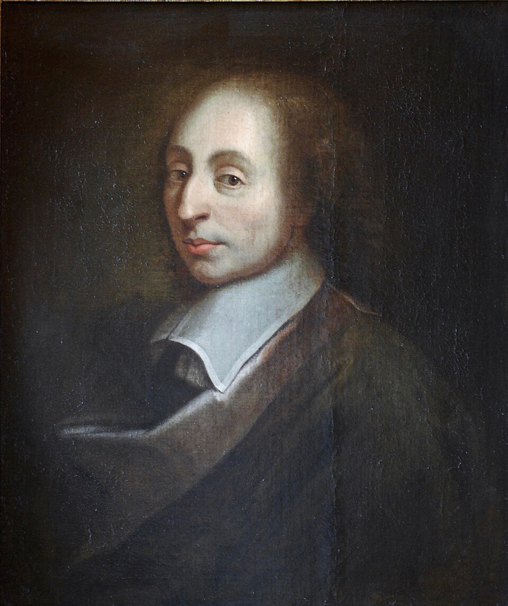
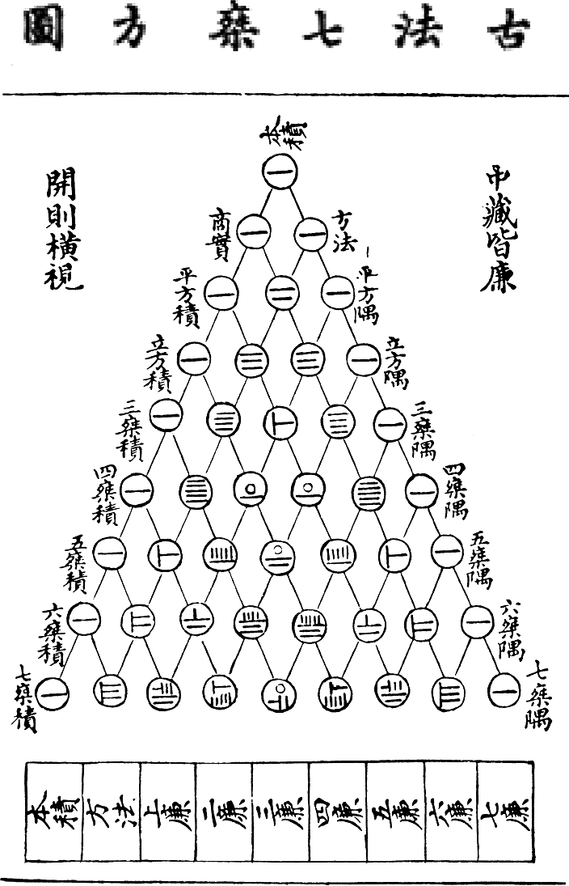

1
1 1
1 2 1
1 3 3 1
1 4 6 4 1
1 5 10 10 5 1
Row 5's sum: 1 + 5 + 10 + 10 + 5 + 1 = 32 = 2⁵ Ways to pick 2 captains from 9 players: 36 (it's entry 2 of row 9) Coefficient of x³ in (x + 2)⁵: 40 (row 5 is hiding inside the algebra!)
This little pyramid is Pascal's triangle, built by one baby-simple rule: every number is the sum of the two numbers above it. A rule a 1st grader could follow — yet out of it tumble powers of 2, triangular numbers, the Binomial Theorem, and the answers to half the counting questions in competition math. One simple machine, a dozen deep theorems.
In this lesson we don't just NOTICE the patterns — we PROVE them. That word is the difference between this edition and everything easier. A proof is an argument that shows a pattern must continue forever, not just for the rows you checked. You'll learn the three great proof moves of combinatorics: counting the same thing two different ways, splitting into cases that cover everything, and telescoping (peeling a big sum down to a small one). These moves are the real treasure; the triangle is just the playground.
In this lesson, you will:
- 1.Build the triangle and master its secret indexing system (row 0, entry 0)
- 2.Derive the factorial formula C(n, k) = n! / (k!(n − k)!) from scratch
- 3.Prove Pascal's rule two completely different ways — a story proof and an algebra proof
- 4.Prove row n sums to 2ⁿ twice, and split every row in half with alternating sums
- 5.Unpack the diagonals: triangular numbers, tetrahedral numbers, and the hockey stick identity
- 6.Wield the Binomial Theorem — expansions, coefficient hunting, and the truth about 11ⁿ
- 7.Count grid paths (through corners, around barriers) and prove Vandermonde's identity
- 8.Chase probability, odd-entry patterns, and a prime-divisibility theorem
- 9.Dodge the classic mistakes — including the algebraic traps that catch honors students
- 10.Practice with 100 problems, every single answer explained step by step!
How to use this lesson: Read the sections in order — each one builds on the last. Keep a written copy of rows 0–10 next to you (you'll build row 10 yourself in Lesson 1). Every proof is spelled out line by line; read each line and ask "do I believe this line follows from the one before?" Try every "Your Turn" box with pencil and paper before peeking. Ready? Let's go!
📸 Pictures

Blaise Pascal (1623–1662), the French mathematician the triangle is named after. As a teenager he also built one of the first mechanical calculators! See source ↓

The same triangle in a Chinese book from 1303. Chinese mathematicians like Yang Hui knew about it hundreds of years before Pascal was born! See source ↓
🗺️ Your lesson map
Meet the Triangle — and Its Secret Indexing System 🧩Lesson 2
The Choose Function — Deriving C(n, k) = n! / (k!(n − k)!) 🎯Lesson 3
Pascal's Rule — One Identity, Two Proofs 🔍Lesson 4
Row Sums — 2ⁿ, Proved Twice, and the Alternating Sum ⚡Lesson 5
Diagonals — Triangular Numbers, Tetrahedral Numbers, and the Hockey Stick 🌟Lesson 6
The Binomial Theorem — the Triangle in Algebraic Clothes 🛠️Lesson 7
Grid Paths and Vandermonde — the Triangle as a Map 🎨Lesson 8
Probability, Parity, and Primes — Patterns Worth Proving ⚠️Lesson 9
Watch Out! Common Mistakes (Honors Edition) 🧠Lesson 10
Review — The Big Picture 🏋️Practice Problems
100 problems to try ✅Answer Key
Check your work
📚 Picture Sources
- Picture 1 · Blaise Pascal Versailles. By Unknown artist, copying a painting by François II Quesnel. Public domain. From Wikimedia Commons: https://commons.wikimedia.org/wiki/File:Blaise_Pascal_Versailles.JPG
- Picture 2 · Yanghui triangle. By From Zhu Shijie's book "Jade Mirror of the Four Unknowns" (1303). Public domain. From Wikimedia Commons: https://commons.wikimedia.org/wiki/File:Yanghui_triangle.gif